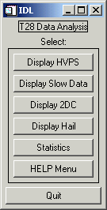

Description For Using T28DISPLAY program – Version 1.0
The T28DISPLAY program was
written in IDL, for displaying and analyzing the data acquired during the T28
airplane flights through various storms.
This version 1.0 handles well all flights during STEPS Project
(May-June, 2000). Work is currently
done to accommodate other T28 flights, from previous years.
The package is designed to run in
Windows IDL 5.4 environment, and the directory structure is as follows:
C:\t28\t28display\
|
Data Lib Output PSfiles
| | |
f747 all 747 *.ps files
f748 customed 748
f750 routines 750
f751 751
f752 752
f753 753
f754 754
f755 755
f756 756
f757 757
f758 758
f759 759
f761 761
- The subdirectory Data includes all the raw files collected by T28 during the STEPS Program flights.
-
The Lib subdirectory has all
the build in routines necessary to run the different components of the T28DISPLAY program.
-
The Output subdirectory
includes the files that will be created when running the statistic component of
the T28DISPLAY program.
-
The Psfiles subdirectory is
where the *.ps files will be saved when a user wants to create such files.
If the user decides to follow this
structure, then the program will run ok as is.
After installing this directories and the data, the user can open an IDL
5.4 session, and set the Path to :
c:\t28\t28display\ and
c:\t28\t28display\lib\
If a user wants to change the
location of the T28DISPLAY program and T28 data, then the following steps must be
performed before running the IDL program:
-
In
c:\t28\t28display\lib\ open file
get_specs.pro, and change the variable data_path to the directory in which the
raw T28 data files are stored. Also,
change the variable buf_path to the directory in which the output files are to
be stored.
-
In c:\t28\t28display\ open
file t28idl.txt and set the path where T28DISPLAY
program is located. Then, open file t28data.txt and set the
directory where the T28 raw files are located.
-
After these changes are done,
make sure you open the IDL 5.4 session and set the Path where T28DISPLAY
program is located as well as the Lib.
After
the Path is setup in the IDL environment, open the T28DISPLAY file and
compile it. At the IDL prompt, type: t28display
The
window bellow will open:
 Each selection will provide a multitude of
option for the user.